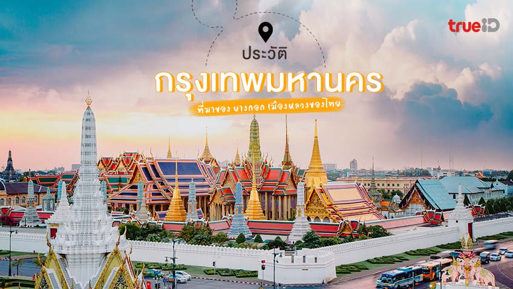

|
||||||
|
 พื้นที่บริเวณกรุงเทพมหานครในปัจจุบัน เดิมเป็นที่ตั้งของเมืองธนบุรีศรีมหาสมุทร ชาวต่างชาติเรียกกันว่า "บางกอก" มาตั้งแต่สมัยกรุงศรีอยุธยา[8] มีความสำคัญเนื่องจากเป็นเส้นทางออกสู่ทะเลและติดต่อค้าขายกับอาณาจักรต่าง ๆ เป็นเมืองหน้าด่านขนอน คอยดูแลเก็บภาษีกับเรือสินค้าทุกลำที่ผ่านเข้าออก ส่วนบริเวณปากน้ำตรงอ่าวไทย เรียกกันว่า "นิวอัมสเตอร์ดัม" มีชุมชนใหญ่และโกดังของชาวต่างประเทศไว้สำหรับพักสินค้า ปัจจุบันคือพื้นที่บริเวณอำเภอพระประแดง[8] ที่มาของคำว่า "บางกอก" นั้น มีข้อสันนิษฐานว่าอาจมาจากการที่แม่น้ำเจ้าพระยาคดเคี้ยวไปมา บางแห่งมีสภาพเป็นเกาะเป็นโคก จึงเรียกกันว่า "บางเกาะ" หรือ "บางโคก" หรือไม่ก็เป็นเพราะบริเวณนี้มีต้นมะกอกอยู่มาก จึงเรียกว่า "บางมะกอก" โดยคำว่า "บางมะกอก" มาจากวัดอรุณ ซึ่งเป็นชื่อเดิมของวัดดังกล่าว และต่อมากร่อนคำลงจึงเหลือแต่คำว่าบางกอก[8][9] ต่อมาเมื่อถึงคราวเสียกรุงศรีอยุธยาใน พ.ศ. 2310 หลังการกอบกู้อิสรภาพจากพม่า สมเด็จพระเจ้ากรุงธนบุรีทรงสถาปนาเมืองธนบุรีศรีมหาสมุทรให้เป็นราชธานีแห่งใหม่ เมื่อวันที่ 3 ตุลาคม พ.ศ. 2313[8] ครั้นสิ้นรัชกาลสมเด็จพระเจ้ากรุงธนบุรี ในวันที่ 6 เมษายน พ.ศ. 2325 สมเด็จเจ้าพระยามหากษัตริย์ศึกได้ขึ้นเสวยราชสมบัติ ทรงพระนามว่าพระบาทสมเด็จพระพุทธยอดฟ้าจุฬาโลกมหาราช ปฐมกษัตริย์แห่งราชวงศ์จักรี มีพระราชดำริว่า ฟากตะวันออกของกรุงธนบุรีมีชัยภูมิดีกว่าตะวันตก เพราะมีลำน้ำเป็นขอบเขตอยู่กว่าครึ่ง หากข้าศึกยกมาติดถึงชานพระนคร ก็จะต่อสู้ป้องกันได้ง่ายกว่าอยู่ข้างตะวันตก จึงโปรดเกล้าฯ ให้สร้างกรุงรัตนโกสินทร์ขึ้นทางฝั่งตะวันออกของแม่น้ำเจ้าพระยาให้เป็นราชธานีแห่งใหม่ โดยสืบทอดศิลปกรรมและสถาปัตยกรรมจากพระราชวังหลวงของกรุงศรีอยุธยา[8] พระองค์มีพระบรมราชโองการให้พระยาธรรมาธิกรณ์กับพระยาวิจิตรนาวี เป็นแม่กองคุมช่างและไพร่ไปวัดกะที่ดินเพื่อสร้างพระนครใหม่ในวันที่ 8 เมษายน พ.ศ. 2325 ทรงประกอบพิธียกเสาหลักเมือง เมื่อวันอาทิตย์ เดือน 6 ขึ้น 10 ค่ำ ย่ำรุ่งแล้ว 9 บาท (54 นาที) ปีขาล จ.ศ. 1144 จัตวาศก ตรงกับวันที่ 21 เมษายน พ.ศ. 2325 เวลา 6.54 น.[8] และทรงประกอบพระราชพิธีปราบดาภิเษกในวันที่ 13 มิถุนายน พ.ศ. 2325[10] ต่อมาในรัชสมัยของพระบาทสมเด็จพระจอมเกล้าเจ้าอยู่หัว ทรงเปลี่ยนชื่อพระนครจาก บวรรัตนโกสินทร์ เป็น อมรรัตนโกสินทร์ และมีฐานะในการปกครองส่วนท้องถิ่นเป็น จังหวัดพระนคร[11] ในรัชสมัยของพระบาทสมเด็จพระจอมเกล้าเจ้าอยู่หัว โปรดเกล้าฯ ให้ตัดถนนใหม่ขึ้น ทรงดำริให้ตัดถนนเจริญกรุง เป็นถนนเส้นแรกในกรุงเทพมหานคร ก่อสร้างเมื่อวันที่ 5 กุมภาพันธ์ พ.ศ. 2404[12] และเปลี่ยนรูปแบบผังเมืองกรุงเทพมหานครเฉกเช่นอารยประเทศ เนื่องจากในสมัยนั้นสยามประเทศถูกคุกคามจากมหาอำนาจยุโรป และตรงจุดนี้เป็นหนึ่งในข้ออ้างที่มหาอำนาจนำมาใช้เพื่อแทรกแซงและคุกคามสยามประเทศ ภายหลัง ต่างชาติยุโรปเองได้ยอมรับกรุงเทพมหานครว่า เป็นหนึ่งในเมืองที่มีผังเมืองงดงามที่สุดในโลกในสมัยนั้น[13] ต่อมาเมื่อวันที่ 21 ธันวาคม พ.ศ. 2514 รัฐบาลจอมพลถนอม กิตติขจรได้รวม จังหวัดพระนคร และ จังหวัดธนบุรี เข้าด้วยกันเป็น นครหลวงกรุงเทพธนบุรี[14] และภายหลังการปรับปรุงการปกครองใหม่เมื่อวันที่ 14 ธันวาคม พ.ศ. 2515 จึงได้เปลี่ยนเป็นชื่อเป็น กรุงเทพมหานคร แต่นิยมเรียกกันว่า กรุงเทพฯ[15] ในปี พ.ศ. 2554 กรุงเทพมหานครได้รับการประกาศจากองค์การการศึกษา วิทยาศาสตร์ และวัฒนธรรมแห่งสหประชาชาติ ให้เป็นเมืองหนังสือโลก หรือ World Book Capital ประจำปี พ.ศ. 2556[16] กรุงเทพมหานครติดอันดับที่ 102 เมืองน่าอยู่ของโลก |
|||||
 |
||||||